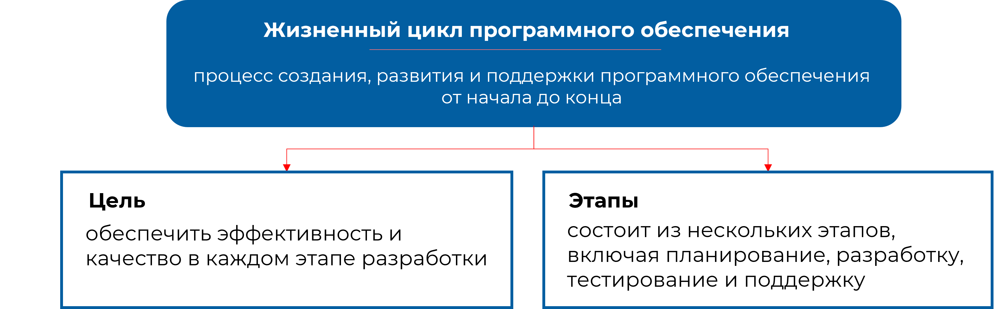

3/10
Жизненный цикл программного обеспечения – это период, который начинается с момента принятия решения о необходимости создания системы и заканчивается моментом ее полного вывода из эксплуатации. Методология проектирования информационных систем описывает этот процесс как последовательность этапов и процессов. Каждый этап определяет объем работ, достигнутые результаты, методы и ответственность участников.
Стадии жизненного цикла включают анализ требований, проектирование, реализацию, внедрение и эксплуатацию. Каждый этап ограничен по времени и заканчивается выпуском определенного продукта.
- ГОСТ 34.601-90,
- ISO/IEC 12207,
- Rational Unified Process,
- Microsoft Solution Framework
- Extreme Programming
Эти стандарты определяют процессы и организацию жизненного цикла, чтобы обеспечить высокую эффективность и взаимодействие между системами.
ГОСТ 34.601-90. «Информационная технология. Комплекс стандартов на автоматизированные системы. Автоматизированные системы. Стадии создания». Настоящий стандарт распространяется на автоматизированные системы (АС), используемые в различных видах деятельности (исследования, проектирование, управление и т.п.), в том числе их комбинации, создаваемые в организациях, объединениях и компаниях. В стандарте указаны этапы и этапы создания АС.
Стандарт ISO/IEC 12207 является базовым и определяет жизненный цикл программного обеспечения. Стандарт определяет стратегию и общую процедуру создания и эксплуатации программного обеспечения, охватывающую жизненный цикл от концептуальной идеи до завершения проекта. В стандарте ISO/IEC 12207 также определяются четыре организационных процесса: процесс управления; процесс создания инфраструктуры; процесс усовершенствования; процесс обучения.
Rational Unified Process (RUP) – это процесс разработки программного обеспечения. Его цель – обеспечить высококачественный программный продукт, отвечающий потребностям конечных пользователей, в рамках предсказуемого графика поставки и бюджета. RUP обеспечивает строгий подход к решению проблем проектирования и ответственности разработчиков.
Microsoft Solutions Framework (MSF) – это методология создания приложений .NET и другого объектно-ориентированного программного обеспечения. Он основан на гибком, простом в управлении процессе разработки, который адаптируется к контексту проекта. Стандарты работы с требованиями к качеству в таких областях, как производительность и безопасность, непосредственно включены в методологию гибкой разработки программного обеспечения MSF.
Extreme programming (XP) – это методология разработки программного обеспечения, предназначенная для улучшения качества программного обеспечения и реагирования на меняющиеся потребности клиентов. В качестве типа гибкой разработки программного обеспечения он выступает за частые выпуски в короткие циклы разработки, предназначенные для повышения производительности и определения этапов, на которых могут быть приняты новые требования клиентов.